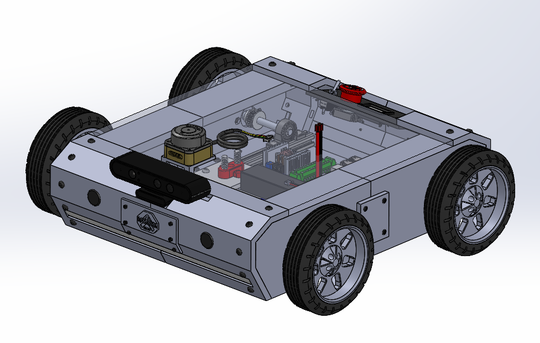
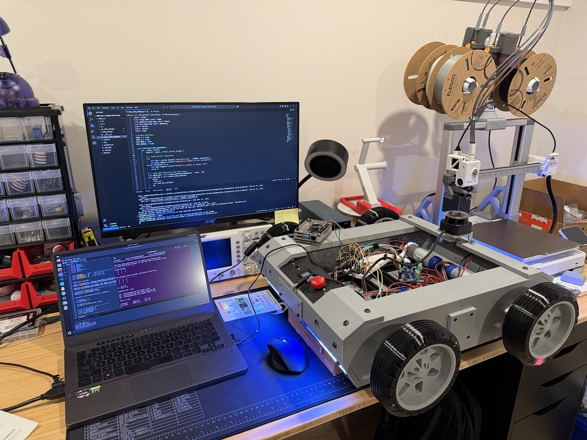

← Back to Home
Helix Mk. 1 – Autonomous Mobile Robot

Overview
Helix Mk. 1 is an autonomous mobile robot developed to explore
LiDAR-based SLAM, real-time motor control, and ROS2 middleware
on embedded hardware.
Fully designed using Solidworks.
System Architecture
- Raspberry Pi 4B – ROS2 Headless, mapping, navigation
- Teensy 4.1 – real-time motor control and encoders
- UART protocol for deterministic communication
- SLAMTEC RPLidar C1 - in implementation
- Orbbec Astra 3D Camera - in implementation
Key Engineering Challenges
- Accurate encoder-based odometry at low speeds
- PID tuning under noisy motor feedback
- Power protection for mixed-voltage system
Results

- Achieved stable closed-loop velocity control and real-time odometry
streaming to ROS2 via custom UART script.
- Wireless ROS2 teleop control from dev machine to Pi (via /cmd_vel topic)
- Power protection for mixed-voltage system
Next Improvements
- Orbbec Astra 3D Camera setup -> point clouds
- Integrate WT901 IMU
- Pose Estimate sensor fusion via EKF -> Nav2 stack